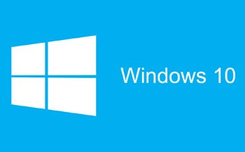
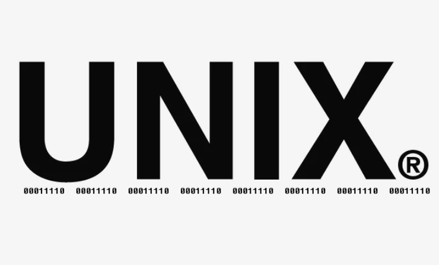

브라우저가 audio 태그를 지원하지 않습니다.
운영체제(Operating System)
목차
운영체제란?
운영체제의 종류
운영체제란?
컴퓨터 시스템의 전반을 관리하는 가장 중요한 소프트웨어다.
모든 하드웨어 및 응용 소프트웨어는 운영체제를 통해서 역할을 수행하게 되므로 운영체제의 성격에 따라 컴퓨터 전반의 성능 및 기능, 호환성이 달라지기도 한다.
운영체제의 종류
Windows

Linux
Unix

MacOs
끗
Copyright 2021 by Eunwoo